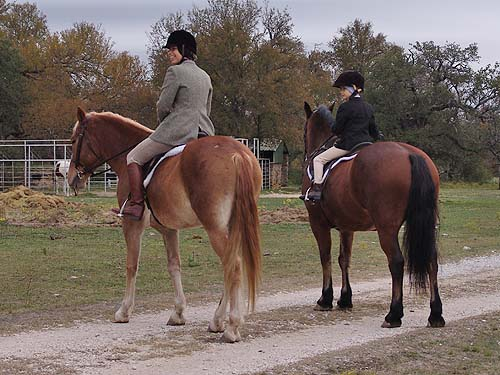
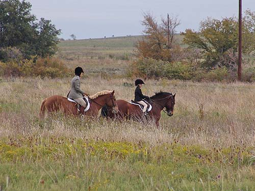
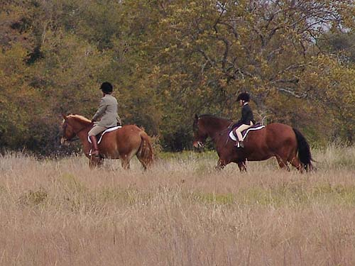
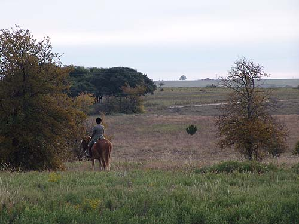
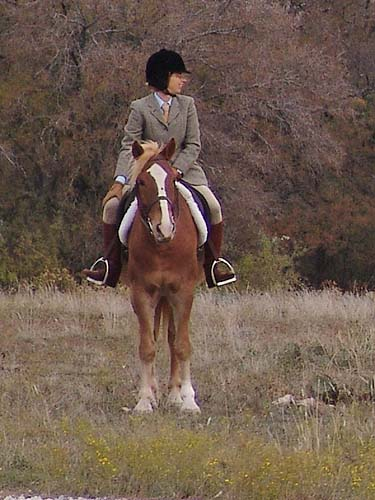
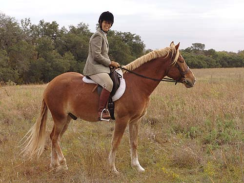
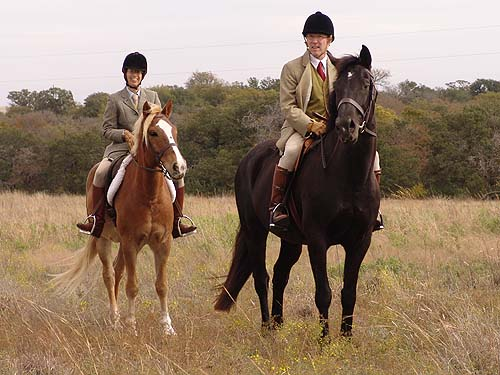
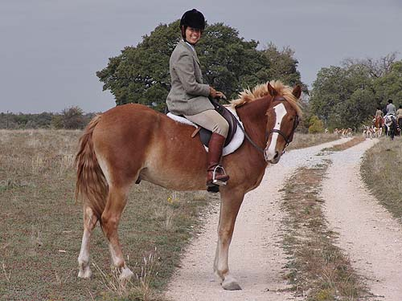

Mo Hunting at Butterfield I was excited and nervous about our first
hunt.
Amanda, my niece was to ride Thuy, so
there was
a lot to think about. Unfortunately she
started feeling ill
once we started out, and we had to turn
back to return her
to her parents and to untack Thuy. He
had to watch as Mo
and I rode off to find Third Flight.
Mo was so good. He left the trailers without
being worried, and waited
while we watched the huntsman put in and
work a covert between us and
where Third was heading.
A very good start for his hunting career
bringing up the rear in third, and 1/2
way through joining a whip to give him
a break and give him a reward for
handling the stresses of the day. We had
a nice canter and took a jump
heading in. I also viewed a coyote and
enjoyed a lovely day out.
(Click
here for more hunt pictures)

Waiting to start out. Mo is taller
than Thuy, but not as stout.

Heading out behind Third, with Amanda
on Thuy.

Leading the way back to the trailers
when Amanda started feeling sick.

Calmly watching the hounds work, and
waiting so as not to foul the line.

Joined up with Third and listening
to the hounds speaking.

Mo was relaxed enough to rest a leg
and watch for the other fields to come in.

With Chris and Sophie watching for
hounds.

Talking with the camerman and
not concerned that the rest of the field is leaving us.